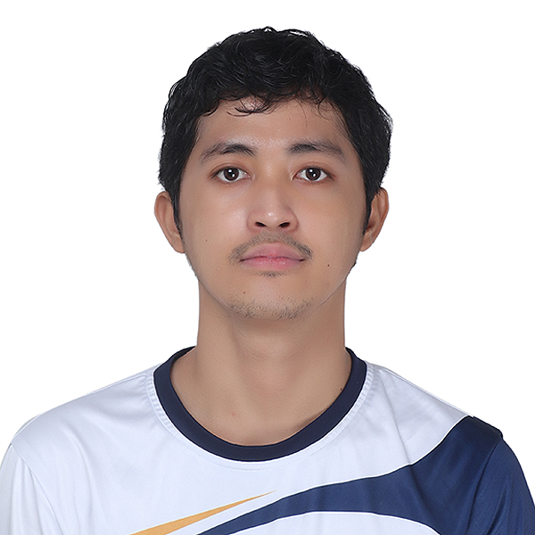

Contact Information
Phone Number:
09463011907
Email Address: markjohntresreyes@gmail.com
Address
Block 11 Lot 47, Villa Obiedo Subdivision, Cararayan, Naga City
Skills
- Problem Solving
- Program Development
- Web Development
- Critical Thinking
- Video Editing
- Adaptability
- Attention to Detail
MARK JOHN M. TRES REYES
BS Computer Science Student
Hi! I'm Mark, a college student with big dreams of becoming a top-tier website designer. My journey began with a deep fascination for programming, which naturally led me to web design and software development. Looking ahead, I aspire to build my own company, offering a wide range of tech services—from video editing and web design to cutting-edge AI solutions and application development.
Education
| Level |
Institution |
| Senior High School |
Philippine Science High School – BRC |
| Junior High School |
Philippine Science High School – BRC |
| Elementary |
Tabuco Central School |
Work Experience
Freelance Video Editor (2023 – Present)
- Provide professional video editing services on Upwork, specializing in YouTube Shorts, Instagram Reels, and social media content.
- Create engaging thumbnails and cover designs to enhance viewer engagement.
- Edit and optimize videos for maximum audience retention and platform-specific algorithms.
Character References
| Institution |
Contact Details |
| PHILIPPINE SCIENCE HIGH SCHOOL - BRC |
871-2280 | ocd@brc.pshs.edu.ph |